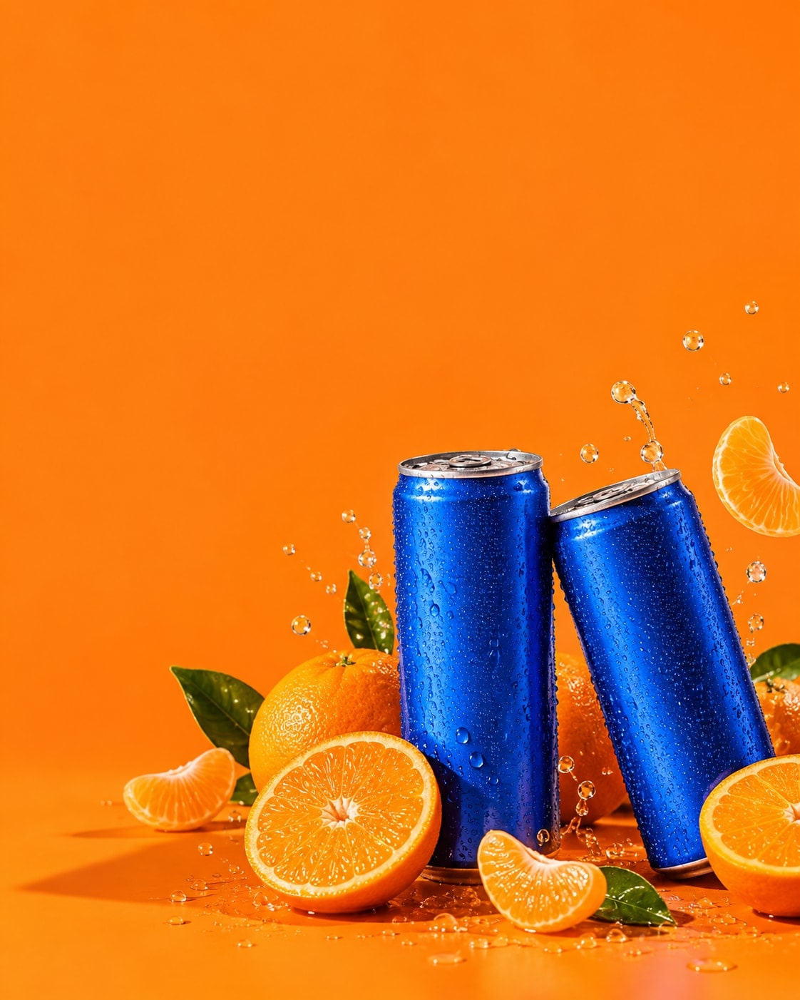

| ||
 MEET SODA CLUB GOOD | ||
Zon of geen zon. Maak van je kleine pauze een moment met kleur. Ontdek SODA CLUB | ||
Open. Pauze. Verder.Blauw blik. Oranje wereld. Ontdek de smaken en ingrediënten en kies jouw favoriet. | ||
| ||
A little break. A big smile.Ontdek SODA CLUB | ||